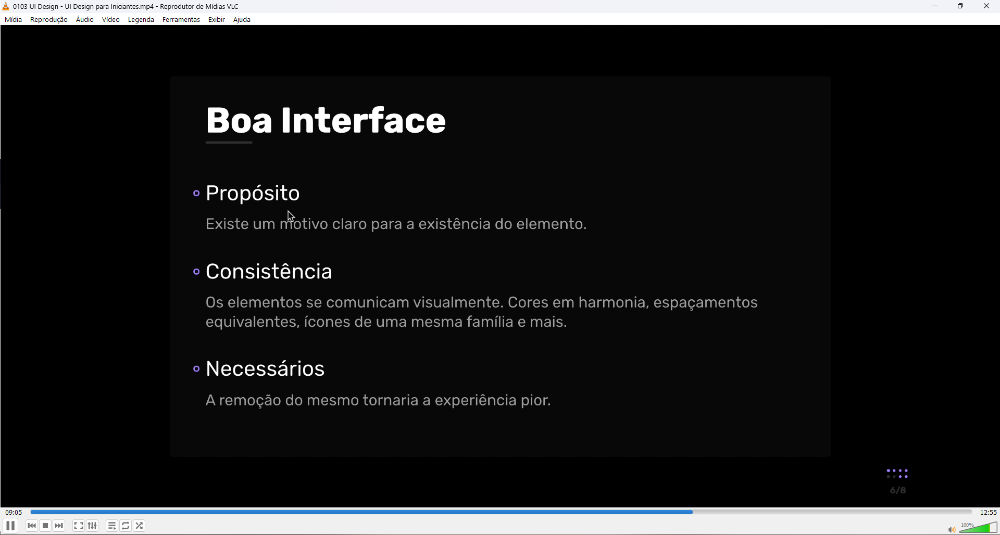
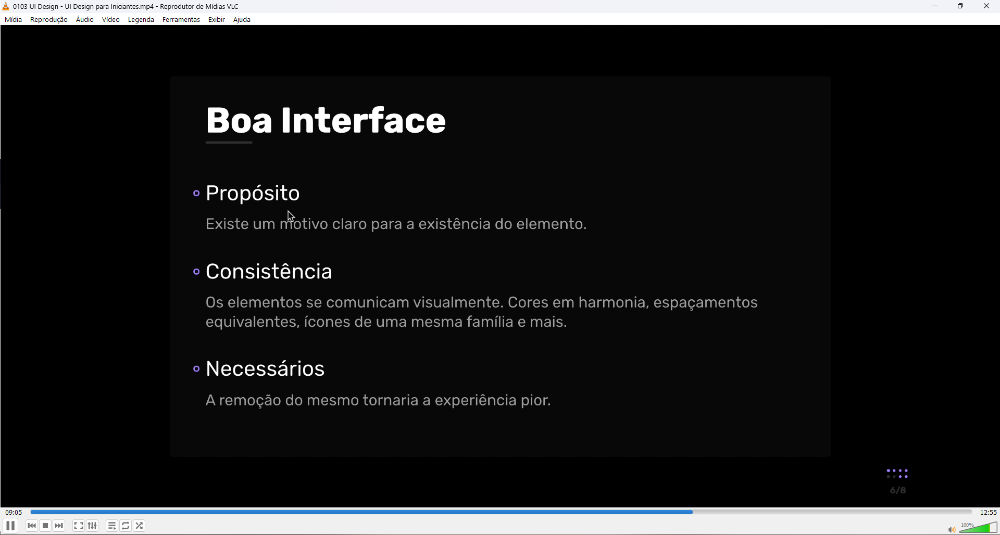
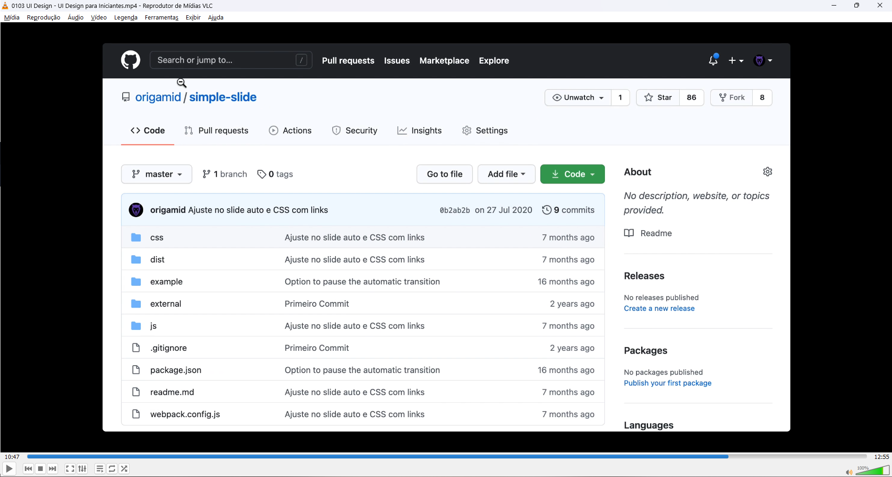
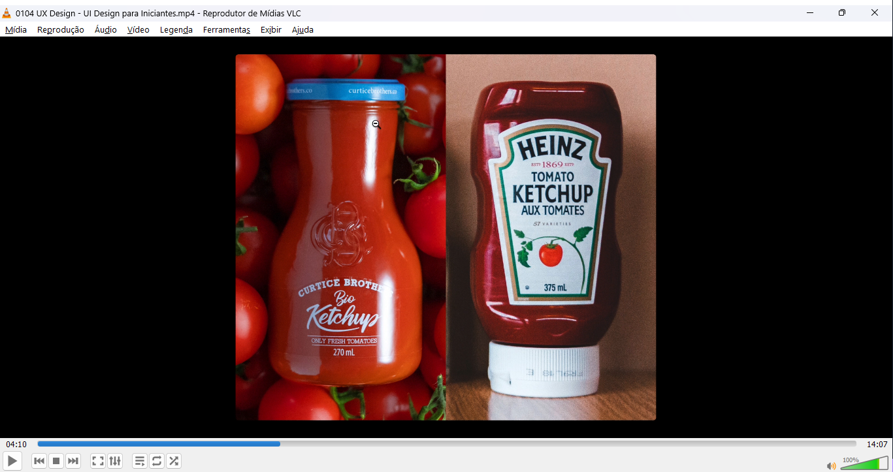
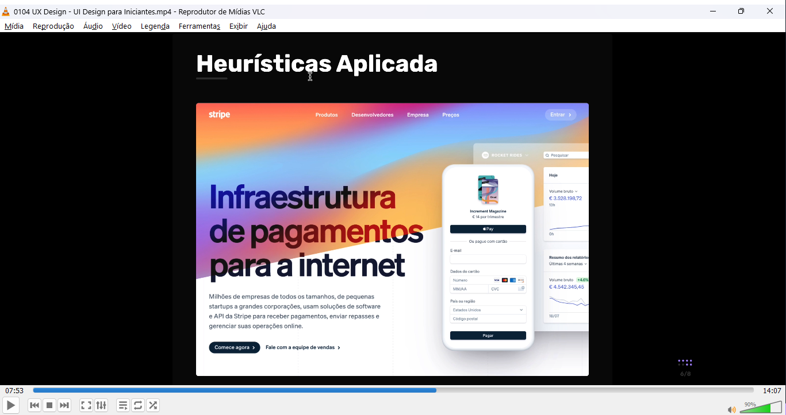
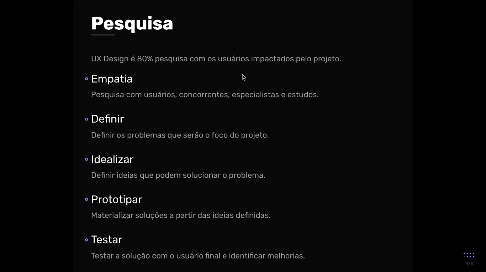

CONTEXTO → Quem vai utilizar, o que vai buscar no site == o objetivo do
site
TESTE → com possíveis usuários → erro? UI bom? UX bom?
Planejamento: Quais funcionalidades de UX e UI necessito nessa janela para
uma boa experiêcia do usuário e o que o site busca oferecer nessa aba?
PQ o ícone de pesquisa do GitHub é uma '/' e do YouTube é uma 'lupa'?
Usuários do GitHub estão acostumados em usarem IDE's, onde '/' significa
'busca'!! (pesquisa de mercado)
Detalhamento do projeto → última etapa → pq?
Resistência à mudanças após programar todo o site → assim, os detalhes
ficam para depois de todos os possíveis designs e testes com os usuários
Intenção → Ambiente Externo x Interno:
Externo= mtas cadeiras (+ barato), + resistência, uso por pouco tempo / 1
cadeira (+ caro), + conforto, uso por mto tempo
Qual é a intenção ou objetivo em utilizar essa cor ou conjunto de cores?
(visando o quê?)
Qual é a intenção em utilizar essa ou essa tipografia? Esse ícone? Esse
objeto? O posicionamento de cada elemento?
A presença de um elemento em determinado local?
1. PQ o botão está em azul acima? Principal intenção do desing é fazer o usuário se cadastrar no site → botão destacado!
2. PQ o as letras maiores e de cores diferentes no corpo do site?
Principal intenção do desing aqui é vender o serviço → chamando a atenção
do usuário para o tempo que ele irá poupar utilizando o serviço e a
facilidade em utilizá-lo
3. Side-nav a direita → Registro = também em destaque
a) + de um botão ou link que levam p o mesmo lugar (acessar a conta) → dar
+ facilidade ao usuário p o acesso, em diferentes momentos da
navegação!!
b) Cor em azul... + uma vez utilizado == cor de destaque, contraste
(acentuação)-- chamar a atenção
c) Pq apenas 4 campos p/ preenchimento do cadastro? → + dinamismo ao
preenchimento == + adesão ao site(pesquisa)
1. Menu fica na parte inferior da tela, fixo e poucos ítens → mobile ==
dedo + perto da parte inferior da tela, pouco espaço!
2. Ícones no estilo linha e não preenchido → mais clean (destaque) ==
pouco espaço
3. Posts diferentes → Facebook 1 grade ; Instagram grid com 3 colunas →
rede social + voltada para publicações de imagens / Facebook → mais
texto
4. Fotos do perfil em círculo → foco no 1° plano da imagem (rosto)
5. Azul → cor de destaque, contraste (acentuação)
Tipografia: Tons de Cor diferentes e Tamanho de texto == Hierarquia de
destaque dos textos
Caixa alta == ícones
** Ícones= Devem ter algum função UX necessária na sua forma
Sem Diferença de no tamanho e tipo de fonte na Tipografia

Sem Diferença de Cor na Interface + mesma cor Tipografia

Sem Ícones

Sem Imagens

Sem Espaçamento
 

** Elemento(s) sem um propósito/intenção deve(m) ser eliminado
*** TEXTO → Deixar O ESTRITAMENTE NECESSÁRIO!!
"As pessoas não lêem na web!"

Heurística - boas práticas → aquilo que já está consolidado como a melhor opção de design, que se usa por padrão no mercado
Pesquisa para aquela aplicação

Observar que as embalagens dos 2 ketchups atendem necessidades
diferentes
Não necessariamente uma tem uma melhor UX que a outra.
Que publico quero atingir??
Botão 'Limpar' → botão desnecessário e que prejudica a experiência do
usuário UX
Cor verde → Simples e que facilita mto a experiêcia!
Escaneamento de informaçãoes → Distribuição, forma e organização das informações

1. Dar poucas opções de navegação ao usuário e as + importantes;
2. Logotipo ser clicável - e voltar p a 'Home';
3. Fácil Login ao usuário;
4. Escaneamento a que se destina a empresa = texto e imagens do
produto;
5. Maior contraste em botões → Ação que desejo que o usuário tome!;
6. Mostrar validação social → comentários, depoimentos, reviewes e
parceiros que já utilizaram ou utilizam o produto;
7.Diferenciar os links dos textos

Live feita pelo André sobre UX Design
Saber os conceitos de Design aplicados
Na maior parte dos Layouts digitais estão envolvidos a tipografia, teoria
de cores e espaçamento somente!
A ilustração/fotografia/ícone é essencial para um bom projeto de design!!
Porém, o foco do Designer de interfaces deve estar no restante!
Caso haja necessidade de uma Ilustração (desenhos, ícones) ou fotografia
para compor a interface → outros profissionais devem/podem suprir essa
necessidade (contratar ou criar com AI).